»юль 2009: Ёрик
Ёрик прожил долгую счастливую крысиную жизнь и ушел легко, во сне. ѕережил много
других крыс, значительно более молодых. Ѕыл насто€щим крысом, вожаком стаи.
ƒумаю, он прожил жизнь так, как хотел бы прожить любой крысЕ
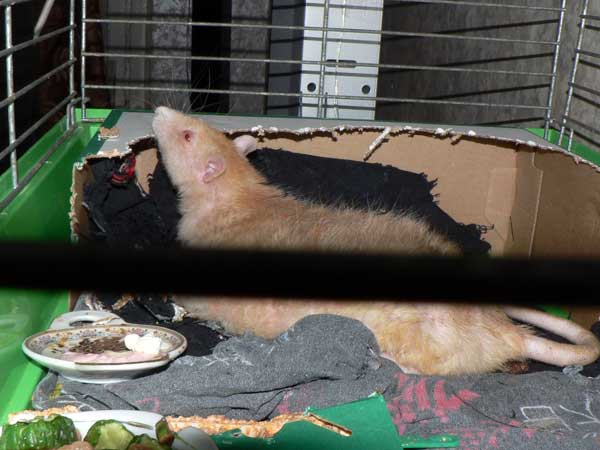
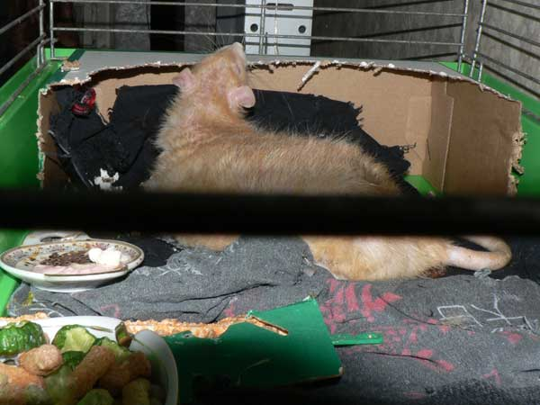
Ёрик в пенсионной клетке. «адние ходилки уже не работают, поэтому вместо домика Ч картонна€ коробка, чтобы дверь была во всю стену. Ёрику понравилось грызть потолок :-)
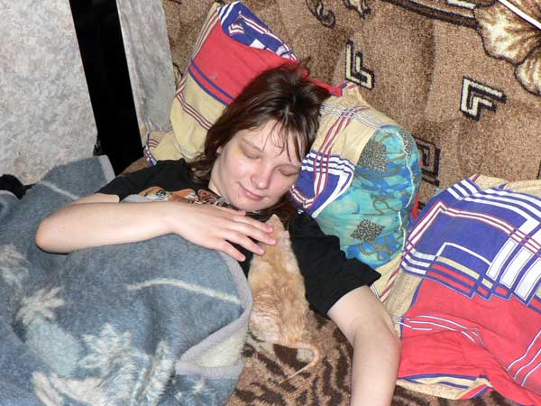
—таренькие крысы станов€тс€ очень ласковымиЕ
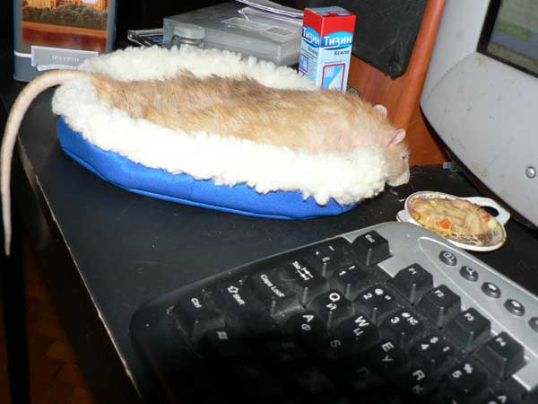
Ёрик спит у компа.
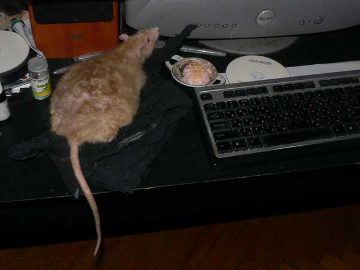
ј на этом фото Ч не спит, а помогает работать.
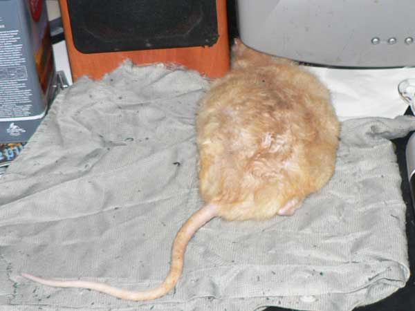
Ёрик изображает страуса.
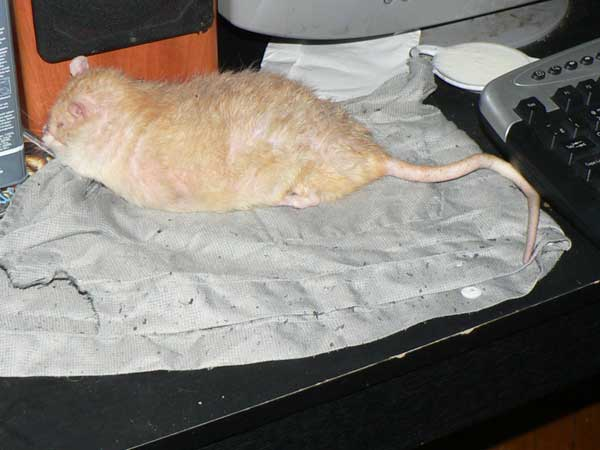
Ч ”мыватьс€ завсегда полезноЕ
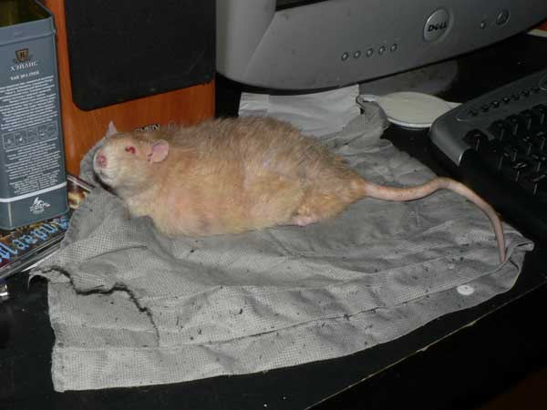
Ч ј за ухом почесать?
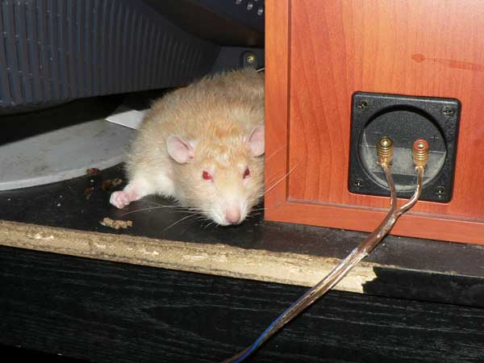
Ч ¬от ща ка-ак кулаком стукну!
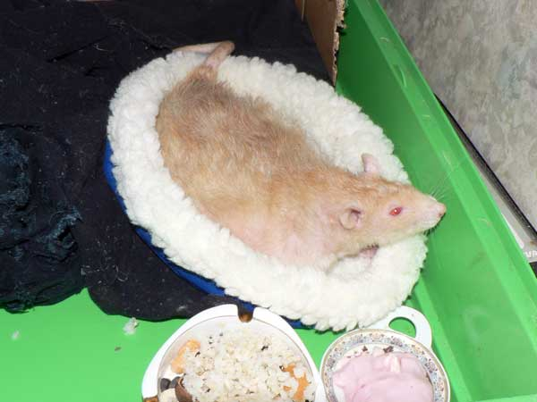
Ч ¬оротит что-то. ќбожралс€Е
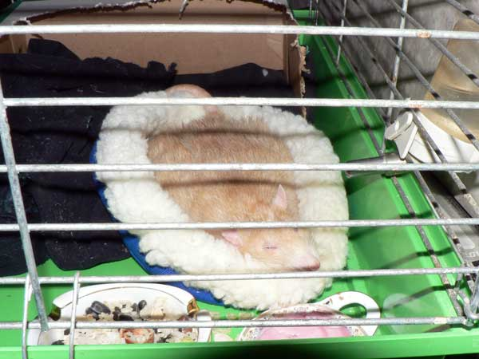
Ч ’р-р-рЕ
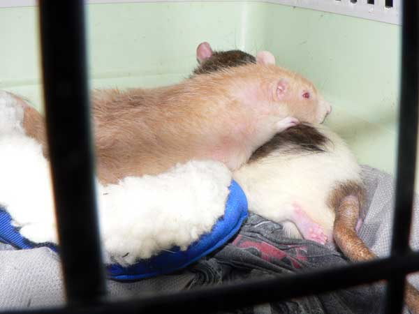
ј это Ч последние фото. ак только дона –умату принесли с операции, Ёрик его сразу начал вылизывать, обн€л Ч и так, пока не доехали до дома.
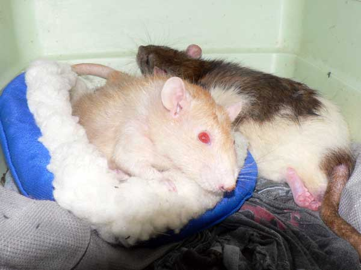
Ёто € открыл переноску Ч дон –умата еще не полностью отошео от наркоза, а Ёрик повернулс€ Ч мол, смотри, что с благородным доном, позаботьс€Е ’от€ формально он уже не был доминантом и последние два мес€ца жил отдельно, все равно осталс€ насто€щим крысаком, забот€щимс€ о своей стае.
12 апрел€ 2007 Ч 20 июл€ 2009